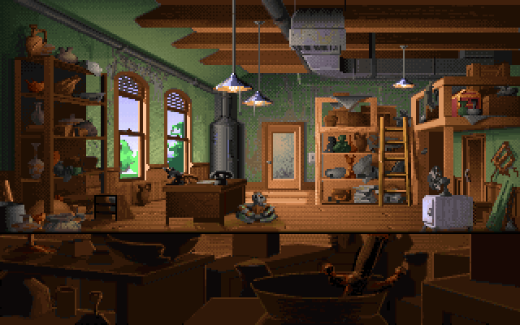
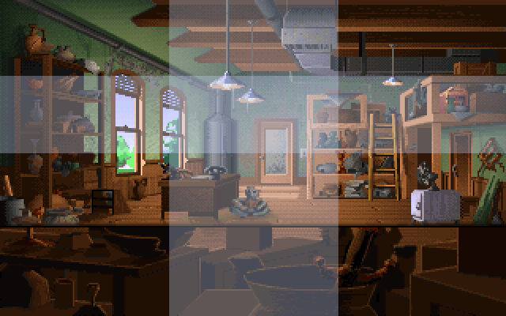
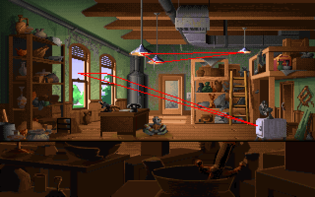
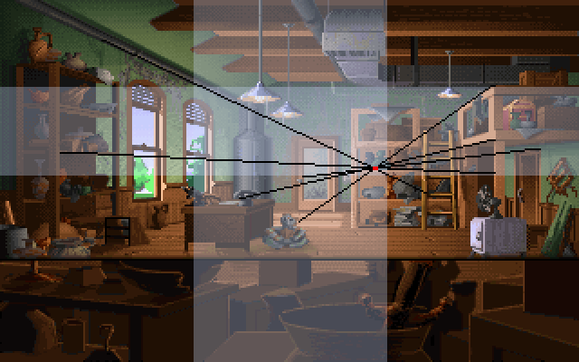
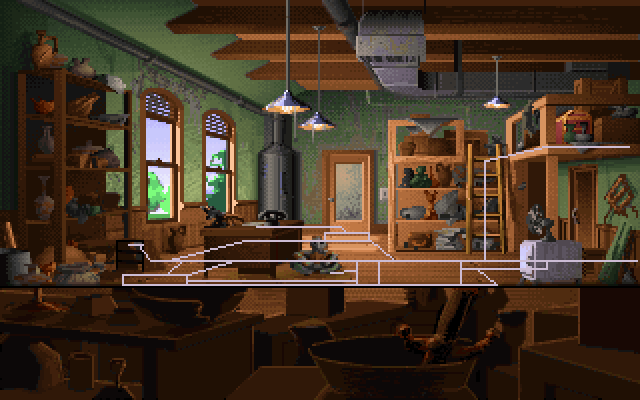

We’re entering the scene design phase of production for our current project, and its a good time to look to the work of others to see what style elements we can pick up!
This is in a similar vein to Ben Chandler’s analysis of several Full Throttle backgrounds
This is going to be the beginning of a series focussing on background art from LucasArt’s Indiana Jones and the Fate of Atlantis
The lead artist on the project was Bill Eaken, he set the style for the background art and did a large chunk of them, with background artists Avril Harrison and James Dollar filling out the rest.
Generally I won’t be able to attribute each piece examined in the series to the particular artist that did the majority of the work on it, as that specific information doesn’t seem to be available anywhere.
Also, they most likely contributed to and touched up each others scenes, so all 3 of them probably had their hands in all the scenes anyway.
There will be some general things that apply to all the scenes.
Actually I think they generally apply to all of the 2D LucasArts style adventure games.
These things provide new constraints in addition to standard cinematography/photography/comic frame composition principles.
It may also mean that the aforementioned principles might need to be adapted in some way.
The first guideline is that LucasArts adventure games generally had the art taking up the full screen.
While Sierra games of the time did not shy away from depicting tight spaces by using up a small portion of the screen, with cutaways, surrounded by dead space, LucasArts games instead chose to exlusively approach this type of scene by framing it with a foreground border of paraphernalia, possibly silhouettes providing negative space.
The second is not a confirmed design principle, but just an observation: I haven’t observed a character in a 2D LucasArts adventure game upscaled beyond their native resolution (i.e upscaled at all). I’ve only noticed them being scaled down. I could be wrong about that, as I havent seen it stated definitively anywhere.
I haven’t paid much attention to the Sierra games. When it comes to our own scenes, we find that when the characters get upscaled to the point where they look more pixelated than the background art, the result looks pretty ugly, as you would expect with pixel art. So we certainly avoid it as a rule.
Its worth mentioning because it does provide some constraints, you usually have to decide in a scene if its going to involve character scaling, and if it does, whats the closest plane to the camera, and the character is going to be at 100% scale at that plane, scaling down as it recedes into the scene. It also limits the shot options for the camera.
Regardless of what LucasArts, Sierra and etc… actually did, we tend to take that approach with our art so we will be looking at the character scaling in each scene we look at, and if the character scaling is capped at 100%, we will be looking at the techniques to accommodate that restriction
This became less of a thing around the time Day of the Tentacle and Full Throttle came around, and cutscenes became more cinematic, but theres the camera shot you would choose for the scene when the player is in control, in order to provide a complete presentation of a scene and the items and puzzles within, and there are the camera angles you want for the cutscenes, to serve the cinematic narrative purposes. Day of the Tentacle was the first one in my memory to include a cinematic cutscene (The intro cutscene, and the scene where George Washington and friends dive out the window). But it was certainly a strong feature in Full Throttle.
Before that, you just had to choose one camera for a scene and settle. We have that restriction, due to production constraints, and I also don’t have the skillset at the moment to pull it off anyway.
This means that in additional to standard cinematography/photography/comic frame design aspects, we will be looking at:
The first scene we will be looking at is Indy’s office.
Its main part to play is a backdrop for an early cutscene where Klaus Kerner steals an Atlantean artifact from Indy during the intro. The player comes back to the scene a little later and can explore it but it doesn’t contain many pivotal game elements (From memory, theres only 1 and depending on the RNG you get during your playthrough you might not even need it).

It has the following properties:

I wasn’t sure how to break it up, as the bottom 66 rows or so where the pots and paraphernalia are are taken up by the verbs and inventory UI when the scene is not used for the cutscene.
It happened to work out better when I broke it up assuming the UI was there, so thats what I went with.
Its a bit odd though, because the primary use for the scene is for the cutscene, where the UI isnt there…
Anyway, You can see it divides up pretty well, the spot where Kerner is standing once he pulls the gun on Indy and Marcus sit right on that bottom left junction of thirds (as is Indy’s desk), while Indy’s face is right on that lower right junction point.
A few features line up with the boundaries:

The ceiling lights form a triangle.
The icebox on the right has the same colours as the sky seen through the windows, balancing the windows on the left. When the player actually has control in the scene, the icebox is the only thing of interest also, so its also well highlighted while simultaneously providing that balance.

The vanishing point sits close to that lower right junction of thirds.
Having that low eye line means the ceiling takes up more space than the floor in the 2D image, making it harder for placing a lot of objects on the floor without a lot of clustering taking place.
Not that clustering is bad, its great for aesthetics, but is used less when it comes to objects the player has to interact with, thats just a practical thing, its hard for the player to click on something if they have to pixel hunt for it and its only peeking out at them from a sliver between two other objects.
Due to the low floor angle, the artifacts are stacked vertically on the shelves etc… Note all the clustering that happens on the shelved objects. Makes it all more dynamic.

The player can get right in there, right up against the UI at the bottom. Not much scaling actually happens here, the player is scaled at 100% in all the lower boxes, the scale only changes when the player leaves that lower row of boxes and heads towards the door.
This makes sense, as most of the “drama” in the cutscene happens in that “no scaling” zone.
The boiler or whatever that thing is in the corner of the room does a good job of hiding the corner.
Each sector has some interesting details.